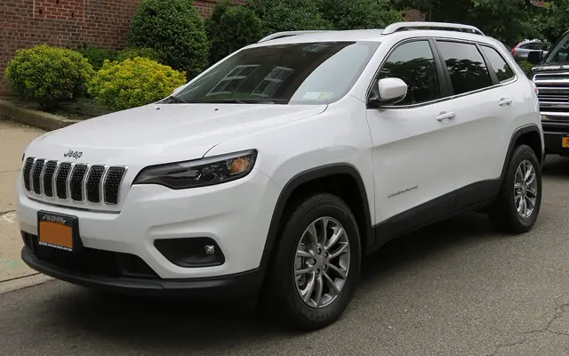

Par Motor › Precios por modelo › Jeep Cherokee
Precio de segunda mano · noviembre de 2026¿Cuánto vale un Jeep Cherokee de segunda mano?

Precio justo estimado de un Jeep Cherokee usado en España, año por año, con los kilómetros normales para su edad y en buen estado: de 13.700 € a 24.000 €. Para tasar el tuyo con sus kilómetros reales y su estado, usa el tasador gratis.
Precios del Jeep Cherokee por año
Cherokee KL (2014–2020)
Precio de nuevo: 2.0 Multijet 140 CV, 34.000 € · 3.2 V6 4x4 272 CV, 46.000 € · 2.0 Multijet 4x4 170 CV, 39.000 €
| Año | Km normales | 2.0 Multijet 140 CV · Diésel | 3.2 V6 4x4 272 CV · Gasolina | 2.0 Multijet 4x4 170 CV · Diésel |
|---|---|---|---|---|
| 2020 | 100.000 km | 18.400 € | 24.000 € | 21.100 € |
| 2019 | 100.000 km | 18.000 € | 22.400 € | 20.700 € |
| 2018 | 100.000 km | 17.600 € | 21.700 € | 20.200 € |
| 2017 | 100.000 km | 17.200 € | 21.000 € | 19.700 € |
| 2016 | 100.000 km | 16.000 € | 20.300 € | 18.300 € |
| 2015 | 100.000 km | 14.800 € | 19.600 € | 17.000 € |
| 2014 | 100.000 km | 13.700 € | 18.800 € | 15.700 € |
Kilómetros normales: 15.000 al año en gasolina, híbridos y eléctricos, y 20.000 en diésel, con un máximo de 100.000 km (por encima no tasamos: el precio depende demasiado del historial de cada coche). Cifras redondeadas a 100 €.
Preguntas frecuentes
¿Cuánto vale un Jeep Cherokee de segunda mano?
Según el año, la versión y los kilómetros, un Jeep Cherokee usado vale hoy de 13.700 € a 24.000 € en España. El más barato de nuestra tabla es un 2.0 Multijet de 2014 (13.700 €) y el más caro un 3.2 V6 4x4 de 2020 (24.000 €). Son precios justos estimados entre particulares y profesionales, con los kilómetros normales para su edad y en buen estado.
¿Cuánto valor pierde un Jeep Cherokee al año?
Con unos años encima, un Jeep Cherokee pierde alrededor de un 4 % de su valor cada año (calculado sobre el 2.0 Multijet de la generación Cherokee KL). Los primeros años la caída es mayor y a partir de los 70.000 km se acelera.
¿Qué motorizaciones tiene el Jeep Cherokee?
En nuestra base de datos hay versiones diésel y gasolina, en 1 generación: Cherokee KL.
¿Cómo sé si me piden demasiado por un Jeep Cherokee?
Abre el tasador de Par Motor, elige el Jeep Cherokee, el año y los kilómetros reales, y escribe lo que te piden. Te diremos si está por debajo del precio justo (chollo) o por encima (caro). Es gratis y no pide registro ni matrícula.
Otros Jeep
Compara su coste real
El precio de compra es solo una parte. Mira cuánto te costaría al mes con combustible, seguro, neumáticos, mantenimiento y lo que pierde de valor.
Abrir el comparador →